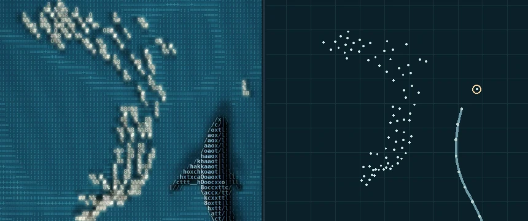

03
Shark intercept
A shark approaches a school of 80 fish. One breaks away. Tail strokes power the chase, and the counter drops when the shark makes contact.
dive_pose.pyView source on GitHub
def water_acceleration(velocity, forward, thrust, speed):
"""Combine axial tail thrust with hull drag and resistance to sideslip."""
lateral = velocity - forward * (velocity @ forward)
return thrust * forward - 2.45 * speed * velocity - 2.9 * lateral
Scrub the reel, track the lone fish, and see the shark’s speed, thrust and roll.